1917—American Dressmaking Step by Step
by Mme. Lydia Trattles Coates
Chapter 15—Steps in Garment Making
Lesson 303—Routine of Making a Waist
Generally speaking, the same method of procedure is followed in making all styles of waists. The following is a very satisfactory schedule from which to work.
The Lining
If the waist has a lining, cut, fit, make, and finish the lining first. For complete instructions see Lesson 305.
To Make 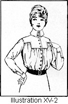Outside 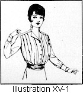Portion of Waist (Illustrations XV-1, 2, and 3)
- Have the body measurements taken correctly.
In taking the measurements for a waist one needs all of the measurements for the upper portion of the body. (Lesson 7.) - Obtain the pattern's measurements. (Lessons 11 to 17 inclusive.)
In measuring the waist pattern, consider the measurements only of such lines of the pattern as are complete. For instance: In a loose waist there is no tip of the bust point. In an evening waist there are no complete center-front or center-back lines. Therefore, in both cases the side lines of the pattern will be the principal line to measure to, and gage the lengths from. - Figure the specifications for fitting. (Lesson 18.) To allow for the blouse, if a blouse is desired, be sure that the pattern measures longer than the model's actual lengthwise waist measurements.
- Make any necessary alterations on the pattern. (Lesson 20.)
- Fold the goods correctly and economically. (Lesson 3.)
- Lay the pattern on the material correctly. (Lesson 34.)
- Mark all perforations and construction marks with tailors' tacks. (Lesson 34.)
- Mark all center lines. (Lesson 34.)
- Cut out the body portion of the waist. (Lesson 35.) Do not cut out the sleeves or collar until the body portion has been fitted and any necessary alterations made and the seams finished, unless it be a kimono or drop sleeve. In this instance, make any alterations necessary in accordance with instructions for altering kimono sleeve pattern. (Lesson 26.) Or if the collar, revers, and vest are all in one piece, then the collar also must be altered (Lesson 29) and cut out.
- Baste in tucks if any. (Lesson 113.)
- If the waist has a yoke, baste on the yoke. (Lesson 163 or 164.)
- If the garment has a vest, baste in the vest. (Lesson 161 or 162.)
- Baste all seams. (Lesson 55.)
- If the garment is to be fitted into a belt at the waist-line, prepare it for hanging (Lesson 140) and prepare the temporary belt. (Lesson 142.)
- If the garment has a lining, do all of the draping onto the lining instead of the belt. If the waist has no lining, hang the waist to a temporary belt. (Lesson 143.)
- Make any necessary alterations (Lesson 145), and if a temporary belt is used, remove same. (Lesson 146.)
- Stitch all plaits or tucks. (Lesson 113.)
- Finish all seams.
- Put on any ruffles or frills. (Lesson 124.)
- Face or hem the fronts, whichever the pattern allowance indicates. (Lesson 95 or 85.)
- Finish the vest. (Lesson 161 or 162.)
- Finish the yoke. (Lesson 163 or 164.)
- Finish bottom of an unlined waist with a band (Lesson 148), peplum (Lesson 154 or 155), draw-string (Lesson 152), beading (Lesson 149), or casing (Lesson 153), or attach the waist to another garment with a joining belt (Lesson 149). The bottom edges of a lined waist are bound (Lesson 159) or hemmed (Lesson 85).
- Make buttonholes (Lesson 207) and sew on the buttons (Lesson 214), or finish with hooks and eyes (Lesson 215), or snap fasteners, or hooks and blind loops (Lesson 217).
- Obtain the arm measurements. (Lesson 7.)
- Obtain the sleeve measurements. (Lesson 14.)
- Figure the specifications for fitting. (Lesson 18.)
- Make any necessary alterations on the sleeve pattern. (Lesson 24.)
- Cut out the sleeves. (Lesson 35.)
- Baste the seams of the sleeves. (Lesson 55.)
- Prepare the sleeves for hanging. (Lesson 172 or 173.)
- Put in the sleeves. (Lesson 174.)
- Finish the tops of the sleeves. (Lesson 177 or 178.)
- Put on the cuff if such is used. (Lesson 180 or 181.)
- Finish the bottoms of the sleeves. (Lesson 179.)
- Obtain the neck measurements. (Lesson 7.)
- Obtain the collar measurements. (Lesson 15.)
- Figure the specifications for fitting pattern. (Lesson 18.)
- Make any necessary alterations on the collar pattern. (Lesson 29.)
- Put on the collar (Lesson 165, 166, or 167). If attached to rever or vest (Lesson 170).
- Apply any desired trimming.
- Put on hangers.
Lesson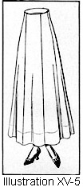 304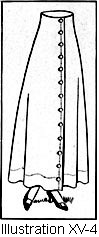—Routine of Making a Skirt (Illustrations XV-4 and 5)
Practically all skirts are made according to a well formulated, closely followed routine. The following guide will prove of value, as each step has been carefully explained in detail in the lessons given for reference.
If a skirt has a foundation, the foundation may be cut, fitted, and made according to directions given below, and afterward the outside of the skirt can be made.
- Obtain the necessary skirt measurements. (Lesson 7.)
- Purchase the pattern according to hip measure.(Lesson 9.)
- Learn the pattern measurements. (Lessons 16 and 17.)
- Obtain the specifications for fitting. (Lesson 18.)
- Make any necessary alterations on the pattern. (Lesson 30.)
- Fold the goods economically. (Lesson 3.)
- Lay on the pattern according to the grain marks. (Lesson 34.)
- Make tailors' tacks to mark all perforations. (Lesson 34.)
- Baste a colored thread to mark center lines. (Lesson 34.)
- Cut out. (Lesson 35.)
- Baste all seams. (Lesson 55.)
- Lay in all plaits, tucks, or folds (Lesson 113), shirrings or cordings (Lesson 111), or drapery.
- If the skirt has a yoke, it is now basted to the garment. (Lesson 163 or 164.)
- If the skirt has ruffles, they are basted on. (Lesson 124.)
- If the skirt has drapery, it is tacked to the foundation or to a tape with French tacks. (Lesson 222 or 223.)
- Turn under the top of skirt. (Lesson 184.)
- Put in stay and draping lines. (Lesson 184.)
- Make stay belt. (Lesson 185.)
- Hang the skirt. (Lesson 186.)
- Make any necessary alteration. (Lesson 187.)
- Stay seams. (Lesson 68.)
- Stitch seams.
- Stitch plaits if any.
- Make the placket. (Lessons 188 to 197.)
- Bind all raw edges of the seams. (Lesson 65 or 66.)
- Finish the top of the skirt.
- Press the skirt seams. (Lesson 5.)
- Finish bottom of the ruffles or drapery or flounces.
- Finish the bottom of the skirt. (Lesson 85, 89, 90, 95, 96, or 97.)
- Put on hangers.
Lesson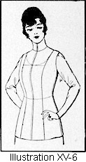 305—Routine of Making a Fitted Lining (Illustration XV-6)
- Obtain the body measurements. (Lesson 7.)
- Learn the pattern's measurements. (Lessons 11 to 17, inclusive.)
- Figure the specifications for the fitting of the pattern. (Lesson 18.)
- Make any necessary alterations on the pattern. (Lesson 20.)
- Fold the goods economically. (Lesson 3.)
- Lay on the pattern correctly. (Lesson 34.)
- Make all construction marks with tailors' tacks. (Lesson 34.)
- Mark all center lines. (Lesson 34.)
- Cut out. (Lesson 35.)
- Baste all seams. (Lesson 55.)
- Try on and make all necessary alterations. (Lesson 144.)
- Welt-seam all seams. (Lesson 75.)
- If a high collar is desired, obtain the neck measurements. (Lesson 7.)
- Obtain collar pattern measurements. (Lesson 15.)
- Figure the specifications for fitting. (Lesson 18.)
- Alter pattern if necessary. (Lesson 29.)
- Make collar. (Lesson 165, 166, or 167.)
- Apply the collar. (Lesson 165, 166, or 167.)
- If no collar is desired, trim the neck to any shape desired and finish with a bias facing. (Lesson 95 or 96.)
- Finish the closing with either a hem or a facing (Lesson 85, 95, or 96), whichever the pattern has allowed.
- Face bottom edges with 1/2-inch bias facing. (Lesson 95 or 96.)
- If no sleeves are to be set in, finish the arm-scye with the exceptional facing. (Lesson 98.)
- If sleeves are to be set in:
- Obtain the arm measurements. (Lesson 7.)
- Obtain the sleeve measurements. (Lesson 14.)
- Figure the specifications for fitting. (Lesson 18.)
- Alter sleeve pattern if necessary. (Lesson 24.)
- Cut sleeves. (Lesson 35.)
- Prepare for putting in. (Lesson 172.)
- Put in the sleeves and finish the top. (Lesson 174.)
- Hem or face the bottom of the sleeve. (Lesson 179.)
Lesson 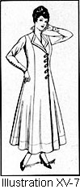306—Routine of Making a Princess Dress (Illustration XV-7)
- Body measurements. Body measurements are taken, both waist and skirt, exactly as directed in Lesson 7.
- Pattern measurements. The pattern's measurements, skirt, body, sleeves, and collar, are made exactly as if each were separate portions: Skirt (Lesson 16), body portion (Lesson 13), sleeves (Lesson 14), collar (Lesson 15).
- To make alterations on the pattern: Each portion is altered individually, graduating its lines to the portion of the garment to which it is joined. (Lessons 30, 20, 24, and 29.)
- To cut, fit, make, and finish the garment:
- Follow all of the rules for Skirt Making for the cutting, fitting, and making of the skirt.
- Follow all of the rules for Waist Making for the cutting, fitting, and making of the waist.
- Follow all of the rules for Sleeve Making for the cutting, fitting, and making of the sleeves.
- Follow all of the rules for Collar Making for the cutting, fitting, and making of the collar.
Lesson 307—Routine of Making a Princess Slip (Illustration XV-8)
- Obtain the correct measurements. (Lesson 7.)
- Learn the pattern's measurements. (Lessons 11 to 17, inclusive.) The Princess Slip depends upon the side-front and side-back lines and underarm seams for the fitting.
- Figure the specifications for the fitting of the pattern. (Lesson 18.)
- Make any necessary alterations on pattern. (Lessons 20 and 30.)
- Fold the goods economically. (Lesson 3.)
- Lay on pattern correctly. (Lesson 34.)
- Mark all construction marks with tailors' tacks. (Lesson 34.)
- Mark all center lines. (Lesson 34.)
- Cut out. (Lesson 35.)
- Baste all seams. For French seams (Lesson 60), fell seams (Lesson 58), or French fell seams (Lesson 59).
- Try on and make any necessary alterations. (Lessons 144 and 187.)
- Finish all seams.
- Make placket. (Lesson 192.)
- Make buttonholes (Lesson 207) and sew on buttons (Lesson 214).
- Finish top with narrow facing, and apply the trimming as for corset-cover. (Lessons 96 and 230, or 231.)
- Finish arm-scye as for corset-cover. (Lesson 98.)
- Hem or face bottom. (Lesson 90, 95, or 96.)
- Put on ruffles (Lesson 124) or any trimming desired.
Lesson 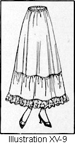308—Routine of Making a Petticoat (Illustration XV-9)
Follow the same general rules given for Skirt Making. The top will be finished with either a band (Lesson 148) or a casing (Lesson 152).
Lesson 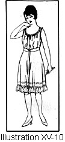309—Routine of Making a Corset-Cover (Illustration XV-10)
- Have the correct measurements taken. (Lesson
7.) In taking the measurements for a corset-cover one needs:
- The bust measure.
- The waist-line measurement.
- The side-front measure.
- The side-back measure.
- Learn the pattern's measurements. (Lessons 11 to 13.)
In measuring the corset-cover pattern one considers measurements only of the Bust, which the pattern-makers will state the size of.
The Waist measure, which the pattern-makers will state the size of.
The Side-front measure, measured from the center of the shoulder line on a direct line to the waist.
The Side-back line, measured from the center of the shoulder on a direct line to the waist.
We have no tip of the bust or shoulder-blade lines unless there are darts or fitted seams. In this instance, take all the measurements exactly as for a tight waist. (Lesson 305.) The underarm line of the corset-cover being low makes the underarm measurement a very unreliable one to depend upon for the fitting of the pattern. Therefore, in the absence of only partial lengths of center-front and center-back lines and underarm lines, one must depend upon the side-front and side-back lines for fitting. - Figure the specifications for the fitting of the pattern. (Lesson 18.)
To take care of the blouse, if a blouse is desired, be sure that the pattern measures 2 inches longer than the modal's measurements. - Make any necessary alterations on the pattern. (Lesson 23.) The pattern should be large enough to allow for both shrinkage and freedom, as there is nothing more uncomfortable in wearing apparel than an undergarment which is too tight.
- Fold the goods economically. (Lesson 3.)
- Lay on the pattern correctly. (Lesson 34.)
- Mark all construction marks with tailors' tacks. (Lesson 34.)
- Mark all center lines. (Lesson 34.)
- Cut out. (Lesson 35.)
- Baste in tucks if any. (Lesson 113.)
- Baste all seams. (Lesson 55.)
- If the corset-cover is sewed into a belt at the waist, prepare the garment for hanging. (Lesson 140.)
- Hang the corset-cover to a temporary stay belt. (Lesson 143.)
- Make any necessary alterations. (Lesson 145.)
- French-seam all seams. (Lesson 60.)
- Face or hem the fronts, whichever the pattern allowance indicates. (Lesson 95 or 85.)
- Face the arm-scye with the exceptional facing. (Lesson 98.)
- If the top of the corset-cover is loose fitting, whip on the lace, insertion,
or beading, using a roll hem. (Lessons 91 and 230.)
If embroidery edging is put on:- Turn the top edge of the corset-cover over to the right side of the garment and baste flat. No seam or raw edges should show on the underside.
- Baste the embroidery trimming over the turned edge of the corset-cover.
- Cover with beading, insertion, or trimming braid the edge where the embroidery trimming is applied.
If the beading or the insertion is to come down as a yoke on the corset-cover, apply a narrow facing on the garment (Lesson 95 or 96), then whip on the insertion or beading (Lesson 53). - Finish the bottom of the corset-cover in any desired manner. It may be finished with a band (Lesson 148), peplum (Lesson 154 or 155), draw-string (Lesson 152), beading (Lesson 157 or 158), or casing (Lesson 152), or one may attach the corset-cover to another garment with a joining belt (Lesson 149).
- Make buttonholes (Lesson 207) and sew on the buttons (Lesson 214).
Lesson 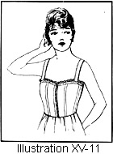310—Routine of Making Brassiere (Illustration XV-11)
- Obtain the correct measurements. (Lesson 7.)
- Learn the patterned measurements. (Lessons 11 to 13.)
- Figure the specifications for the fitting of the pattern. (Lesson 18.)
- Make any necessary alterations on the pattern. (Lesson 20.)
- Fold the goods economically. (Lesson 3.)
- Lay on the pattern correctly. (Lesson 34.)
- Mark all construction marks with tailors' tacks. (Lesson 34.)
- Mark all center lines. (Lesson 34.)
- Cut out. (Lesson 35.)
- Baste all seams. (Lesson 55.)
- Try on and make any necessary alterations. (Lesson 144.)
- Welt-seam all seams. (Lesson 75.)
- Slip the boning between the folds of the welt seam.
- Finish top exactly as for corset-cover. (Lesson 95 or 96.) Usually, however, a brassiere requires a faced top edge before the trimming is applied. (Lesson 230.)
- Finish the closing with either a hem or a facing (Lesson 85 or 95), whichever the pattern has allowed. If a laced closing is desired, face the edges and make eyelets (Lesson 255), through which to run the lacing.
- Face bottom edge with 1/2-inch bias facing. (Lesson 95 or 96.)
- Finish the arm-scye with the exceptional facing. (Lesson 98.)
Lesson 311—Routine of Making Drawers (Illustration XV-10)
- Obtain the body measurements. (Lesson 7.)
- Learn the pattern's measurements. (Lessons 16 and 17.)
- Figure the specifications for the fitting of the pattern. (Lesson 18.)
- Make any necessary alterations on the pattern. (Lesson 30.)
- Fold the goods economically. (Lesson 3.)
- Lay on pattern correctly. (Lesson 34.)
- Mark all construction marks with tailors' tacks and mark all center lines. (Lesson 34.)
- Cut out. (Lesson 35.)
- Baste all seams (Lesson 55) and stitch in any tucks which may finish the lower edges (Lesson 113).
- If the drawers have a yoke, baste on same. (Lesson 163 or 164.)
- Try on and make any necessary alterations. (Lesson 187.)
- Finish the seams. (Lesson 60 or 75.)
- Finish the closing. (Lesson 95 or 96.)
- To finish the top one may put on a band (Lesson 148), or casing (Lesson 95 or 96), or join to another garment (Lesson 157 or 158).
- If embroidery is used, set on the same as a faced ruffle. (Lesson 126.)
- If embroidery is not used, hem or face the lower edge of the drawers. (Lesson 85, 95, or 96.)
- Whip on any trimming. (Lesson 230 or 231.)
- Make buttonholes (Lesson 207), and sew on buttons (Lesson 214).
Lesson 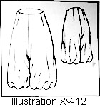312—Routine of Making Bloomers (Illustration XV-12)
- Obtain the body measurements as for drawers. (Lesson 7.)
- Learn the pattern's measurements. (Lessons 16 and 17.)
- Figure the specifications for fitting. (Lesson 18.)
- Alter pattern if necessary. (Lesson 30.)
- Fold the material economically. (Lesson 3.)
- Lay on the pattern. (Lesson 34.)
- Cut out. (Lesson 35.)
- Baste up all darts and seams. (Lesson 55.)
- Try on and make necessary alterations. (Lesson 187.)
- Finish the seams. (Lesson 60 or 75.)
- Finish the closing. (Lesson 195 or 196.)
- Finish the top with a band (Lesson 148), or a casing (Lesson 95 or 96), or join to another garment (Lesson 157 or 158).
- Finish the bottom of the bloomers with a band (Lesson 99 or 100), or casing (Lesson 152), or ruffle (Lesson 124).
Lesson 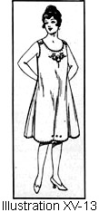313—Routine of Making a Chemise (Illustration XV-13)
- Obtain the correct measurements. (Lesson 7.) The only measurements required for the plain chemise are the bust, waist, and hip measures, unless the chemise is fitted at the waist-line. In case the chemise is fitted at the waist-line, take the measurements exactly as for a corset-cover. (Lesson 309.)
- Obtain the pattern's measurements. There is no portion of the chemise pattern which requires measuring unless it has a waist-line. In this case, measure exactly as for corset-cover. (Lesson 309.)
- Figure the specifications for fitting the pattern. (Lesson 18.)
The only specifications necessary are for the bust, waist, and hips, unless, as above stated, it has a waist-line. - Make any necessary alterations on the seams of the pattern.
- Fold the goods economically. (Lesson 3.)
- Lay on the pattern correctly. (Lesson 34.)
- Mark all construction marks with tailors' tacks. (Lesson 34.)
- Mark all center lines. (Lesson 34.)
- Cut out. (Lesson 35.)
- Baste all seams. (Lesson 55.)
- Try on and make any necessary alterations. (Lesson 145.)
- From the top of the chemise to the waist-line finish exactly as for corset-cover. (Lesson 309.)
- If an ordinary chemise, hem the lower edge with fine hemming stitches. (Lesson 48, 49, or 50.)
Lesson 314—Routine of Making an Envelop Chemise (Illustration XV-13)
- Obtain the correct measurements. (Lesson 7.)
The measurements for the upper portion of the envelop chemise are only the bust, waist, and hip measures, unless the chemise is fitted at the waist-line. In case the chemise is fitted at the waist-line, take your measurements exactly as for corset-cover. (Lesson 309.) The measurements for the lower part of the envelop chemise are the same as for drawers. (Lesson 311.) - Learn the pattern's measurements. There are no lines of the upper portion of the envelop chemise pattern which require measuring, unless it has a waist-line. In this case, measure exactly as for corset cover. (Lesson 309.) The lower portion is measured the same as for drawers. (Lesson 311.)
- Figure the specifications for fitting of the pattern. (Lessons 18 and 30). The only specifications necessary are for upper portion of the bust, waist, and hips, unless, as above stated, it has a waist-line.
- Make any necessary alterations of the upper portion of the chemise on the seams of the pattern. The lower portion is altered as are drawers patterns. (Lesson 311.)
- Fold the goods economically. (Lesson 3.)
- Lay on the pattern correctly. (Lesson 34.)
- Mark all construction marks with tailors' tacks. (Lesson 34.)
- Mark all center lines. (Lesson 34.)
- Cut out. (Lesson 35.)
- Baste all seams. (Lesson 55.)
- Try on and make any necessary alterations.
- From the top of the chemise to the waist-line finish exactly as for corset-cover. (Lesson 309.)
- Face the bottom line of the envelop chemise with bias facing, which should be from 1/2 of an inch to 1 inch wide to allow for the buttons and buttonholes for the fastening which gives the leg effect as of drawers.
- Some of the chemise and drawers combinations have a long placket extending from the neck, making a facing all around the opening of the drawers. This requires a fitted facing. (Lesson 97.)
- Sew on buttons (Lesson 214), and make the buttonholes (Lesson 207).
- Finish the bottom edge with lace edging, whipped on (Lesson 230 or 231) or in any desired manner.
Lesson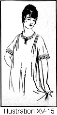 315 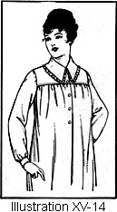- Routine of Making a Nightgown (Illustration XV-14 and 15)
- Obtain the correct body measurements. (Lesson 7.) If the nightgown has a yoke and sleeves, the following measurements are necessary:
- The bust measure.
- The shoulder measurement.
- The chest measurement.
- The across back measurement.
- The sleeve measurements.
- The center shoulder to floor, front and back measurements.
If the gown is to have a low neck and kimono sleeves, no measurements are necessary, except the bust measurements and the side-front and side-back measurements from shoulder to floor.
- Learn the pattern's measurements. For further instructions for pattern measurements see Lessons 11 to 17.
- Figure the specifications for fitting. (Lesson 18.)
- Make any necessary alterations on the pattern. The pattern should be left sufficiently large to allow for both shrinkage and freedom. It is seldom necessary to make alterations on nightgown patterns.
- Fold the material economically. (Lesson 3.)
- Lay on the pattern. (Lesson 34.)
- Mark all construction marks with tailors' tacks, and should one wish to finish the neck and bottoms of sleeves with embroidered scallops, run a colored line to show the edge of the pattern. Mark all center lines. (Lesson 34.)
- Cut out. (Lesson 35.) If intending to embroider the neck and lower edges of the sleeves, cut several inches from the line of basting threads which you have made.
- Baste in tucks, if any. (Lesson 113.)
- Baste all seams. (Lesson 55.)
- If the nightgown has a yoke, set the yoke on to the lower portion of the gown. (Lesson 163 or 164.)
- Try on and make any necessary alterations. (Lessons 145 and 187.)
- Finish all seams. (Lesson 58, 60, or 75.)
- If the nightgown has a placket, finish same. (Lesson 192 or 195.)
- If buttonholes are used, make same (Lesson 207) and sew on buttons (Lesson 214).
- Finish the top of the nightgown exactly the same as the corset-cover is finished. (Lesson 309, step 18.)
- If the nightgown has sleeves, set in same. (Lesson 173.)
- If the sleeves have cuffs, put on cuffs. (Lesson 180 or 181.)
- If the nightgown has a collar, set on same. (Lesson 165 or 166.)
- Finish the bottom of the nightgown with fine hemming stitches (Lesson 49 or 50), or if material is nainsook or fine muslin, hemstitch the hem (Lesson 236).
Lesson 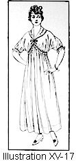316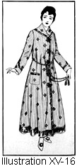—Routine of Making a Bath-Robe (Illustrations XV-16 and 17)
- Obtain the body measurements. (Lesson 7.) Close measurements are unnecessary.
The following measurements will be found useful:- The bust measure.
- The length of sleeve measure.
- The side-front measure from shoulder to floor.
- The side-back measure from shoulder to floor.
- Obtain pattern measurements. (Lessons 11 to 17.) The above measurements only are required for the pattern.
- Figure specifications for fitting. (Lesson 18.)
- Alter pattern. (Lesson 23.) The bathrobe is usually in finished length about 2 inches from the floor.
- Fold material economically. (Lesson 3.)
- Lay on the pattern. (Lesson 34.)
- Cut out the bath-robe. (Lesson 35.)
- Make all seams. The welt seams are usually found to be the most desirable for bath-robes. (Lesson 75.)
- Overface the fronts. (Lesson 95.)
- Obtain arm measurements. (Lesson 7.)
- Obtain sleeve measurements. (Lesson 14.)
- Figure specifications for fitting. (Lesson 18.)
- Alter sleeve pattern. (Lesson 24.)
- Set in sleeve and finish. (Lesson 172.)
- Put in hem. (Lesson 85.)
- Sew on loops or fasteners.
Lesson 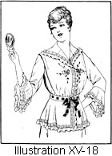317—Routine of Making a Dressing-Sack (Illustration XV-18)
Follow all instructions for Waist Making. (Lesson 303.)
Lesson 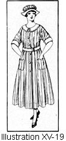318—Routine of Making an Apron (Illustration XV-19)
- Fold the goods economically. (Lesson 3.)
- Lay the pattern on the material. (Lesson 34.)
- Mark center lines and perforations. (Lesson 34.)
- Cut out. (Lesson 35.)
- Baste all seams. (Lesson 55)
- Bind (Lesson 99 or 100), hem (Lesson 85), or face all edges (Lesson 95 or 96).
- If the garment has a belt, put on same. (Lesson 182.)
- Put on pocket. (Lesson 203.)
- If the apron has a collar apply according to Lesson 165, 166, or 167, or cuffs, Lesson 180 or 181.
- Make the buttonholes (Lesson 207) and sew on buttons (Lesson 214).
Lesson 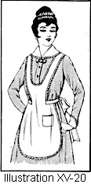319—Routine of Making a Tea Apron (Illustration XV-20)
- Fold the material economically. (Lesson 3.)
- Pin on pattern. (Lesson 34.)
- Put in all center lines and mark all perforations and construction marks with tailors' tacks. (Lesson 34.)
- Cut out the apron. (Lesson 35.)
- Baste the pocket on the front panel. (Lesson 203.)
- Make a narrow pin hem on the edge of the apron. (Lesson 86.)
- Whip on the lace insertion, joining the panels of the apron and also the lace insertion on the edges. (Lesson 227, 228, or 229.)
- Whip on ruffed or lace edging. (Lesson 230 or 231.)
- Set on a band or finish with lace facing. (Lesson 204 or 205.)
- Stamp the embroidery designs according to directions on pattern.
- For eyelet work, follow Lesson 255; for solid embroidery, follow Lesson 254; for outline work, follow Lesson 243.
Lesson 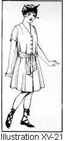320—Routine of Making a Bathing Suit (Illustration XV-21)
- To make the waist: Follow instructions for Waist Making. (Lesson 303.)
- To make the skirt: Follow all instructions for Skirt Making. (Lesson 304.)
- To make the underwaist: Follow all instructions for Lining. (Lesson 305.)
- To make the bloomers: Follow all instructions for making Bloomers. (Lesson 312.)
Lesson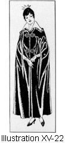 321—Routine of Making a Cape (Illustration XV-22)
- Obtain the body measurements. (Lesson 7.) Practically no measurements are required except bust and length measurements.
- Learn the pattern measurements. (Lessons 11 and 17.)
- Figure specifications for fitting of lengths. (Lesson 18.)
- Alter the lengths exactly as for skirt. (Lesson 30.)
- Fold the material correctly and economically for cutting. (Lesson 3.)
- Lay on the pattern. (Lesson 34.)
- Put in all center lines and mark all perforations and construction marks with tailors' tacks. (Lesson 34.)
- Cut out both the lining and the material, using very sharp scissors, and clip every notch. (Lesson 35.)
If an interlining throughout the cape is desired, cut the outside of the cape and then lay the wrong side of the cape over the interlining and baste them together very carefully. Cut out the interlining according to the lines of the cape. Make up exactly as if it were double-faced material.
French flannel, cotton flannel, or lamb's wool is usually used for the interlining. If using an interlining in material with a nap, pile, or a finish, turn the woolly part of the flannel toward the garment. On smooth-faced materials, turn the woolly part of the interlining toward the body. - Baste the seams of the cape together. (Lesson 55.)
- Try on and make any necessary alterations. (Lesson 187.)
- Stitch all seams.
- Press seams. (Lesson 5.)
- Bind the seams if the cape is unlined. (Lesson 65 or 66.) When a lining is used it is not always necessary to bind the seams.
- Cut the canvas or crinoline for the fronts, revers, and collar. Cut the canvas by the pattern for the front facing if canvas is to be used.
- Put in the canvas or crinoline exactly as for a tailored coat. (See steps 17 to 25, Lesson 298.)
- Bind all edges of the canvas with the same kind of tape used to put in the canvas. (Lesson 298.)
- Put canvas in the collar, following instructions from Lesson 298, steps 30 to 36, inclusive. Put overfacing on fronts, collar, and revers (Lesson 298, steps 37 to 41) if desired.
- Turn up the bottom of the cape. (Lesson 298, steps 42 to 47, inclusive.)
- To line the cape. (Lesson 298, steps 49 to 52, inclusive.)
- To finish the slash for the arms, slip stitch (Lesson 51) the turned edges of the lining and cape together, or finish as a bound buttonhole (Lesson 212).
- Sew on loops or frogs or any desired fasteners.